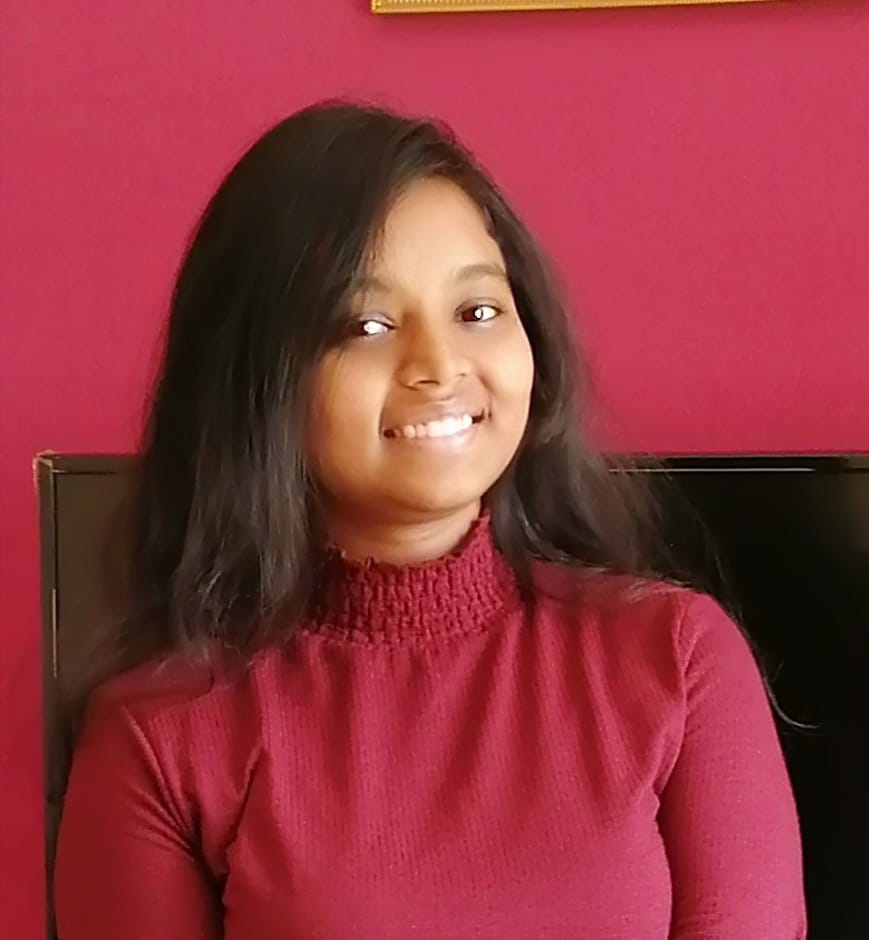

About me..
I was bought up in bangalore and all my education was done here, but my native is Andhra pradhesh. I have always loved this city.The schools and education here, have a different approach towards students, helping them develop young minds in different directions which is amazing! My main aim was to pursue a B.E. in computer science to provide innovative ideas and bring a change, which the wolrd is craving for right now.

How things got to track..
It had always been one of my to do list that I must participate in a hackathon. It all started since the day I've seen my sister participate in hackathons, sitting in front of the computer and typing like a pro.So finally, here I am!

Academics
I have completed my sslc and puc in bangalore. I'm proud to say that I hav scored 99% in my sslc board exam!and I also achieved a rank below 500 in kcet which got me a seat in this wonderful college :)

Activities
Since my childhood, I used to love involving in extracurricular activities. I used to always stand up for any sort of fests or activities going on in the school. I have participated in many chess tournaments and I hav reached Karnataka state level twice. I have also played quite a few badminton tournaments. I also had developed a great interest and also used to participate in various dance,music and arts programs.

Hobbies
Well..I have quite a few interesting hobbies. I recently learned to play guitar from youtube tutorials. I've always been enthusiastic about different forms of painting and sketching. All thanks to my school for building interest about fine arts in me.I'm also a great fan of thriller novels and movies, and I've read many thriller novels during my school, and maybe I am sort of a good reader, but not voracious though!

Ready to tell your story? Let's get in touch!
Drop off a mail and lets get started!
Follow me!